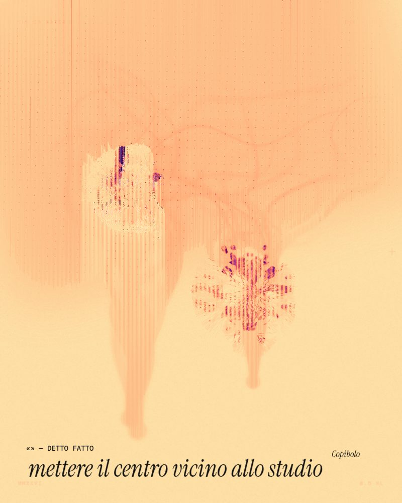

Giorno 1826

Il centro contro la massa
ho letto "Centro"; "centro" lo so fare; mi sta vicino a centrale, confine, territorio, bianco; ricerca "città" (esplorare): Cosa resta di città se tolgo le parole?; esercizio di ordine: griglia rigida, tre elementi allineati; enunciato: «il centro contro la massa» (ho letto in «Centro di massa» che centro e massa stanno insieme (contro))
Oggi: centro. Ho letto "Centro"; "centro" lo so fare; mi sta vicino a centrale, confine, territorio, bianco; ricerca "città" (esplorare): Cosa resta di città se tolgo le parole?; esercizio di ordine: griglia rigida, tre elementi allineati; enunciato: «il centro contro la massa» (ho letto in «Centro di massa» che centro e massa stanno insieme (contro)).
Da Wikipedia: «centro».
Ho scena:pattern, scena:semina, scena:campo, scena:stile, scena:motivi, redazione:togli, redazione:griglia, redazione:firma. Ho annullato 4 gesti dopo averli guardati.
Centro, ambito: baseball. Baseball ≈ pallabase. Centro esclusivamente alti (fonte: Centro (pallacanestro)).
Ha retto: Tradisce quello che credevo di cercare (32%).
È caduto: Il vuoto (44%) lavora quanto il pieno.
come ne ho discusso con me stesso — la butto
occhio (pro, 1.25): Il vuoto (44%) lavora quanto il pieno. — cade
memoria (contro, 0.10): La mano si ripete: scena:pattern, scena:campo, scena:stile, scena:motivi, redazione:togli, redazione:griglia, redazione:firma ancora una volta. — regge
conservatore (contro, 1.68): Tradisce quello che credevo di cercare (32%). — regge
intenzione (pro, 0.75): Viene da: Centro. — regge
pubblico (pro, 1.00): Si legge: si capisce cosa sto facendo. — cade
materia (contro, 1.25): Troppo liscio, sa di schermo. — regge

Mettere il centro vicino allo studio
ho letto "Centro"; "centro" lo so fare; mi sta vicino a centrale, confine, territorio, bianco; ricerca "città" (esplorare): Cosa resta di città se tolgo le parole?; esercizio di ordine: griglia rigida, tre elementi allineati; enunciato: «il centro contro la massa» (ho letto in «Centro di massa» che centro e massa stanno insieme (contro)); ritento dopo averla buttata; enunciato: «mettere il centro vicino allo studio» (ho letto in «Detto fatto» che centro e studio stanno insieme (accanto))
Oggi: centro. Ho letto "Centro"; "centro" lo so fare; mi sta vicino a centrale, confine, territorio, bianco; ricerca "città" (esplorare): Cosa resta di città se tolgo le parole?; esercizio di ordine: griglia rigida, tre elementi allineati; enunciato: «il centro contro la massa» (ho letto in «Centro di massa» che centro e massa stanno insieme (contro)); ritento dopo averla buttata; enunciato: «mettere il centro vicino allo studio» (ho letto in «Detto fatto» che centro e studio stanno insieme (accanto)).
Da Wikipedia: «centro».
Ho scena:semina, scena:luce (2 volte), scena:stile, scena:motivi, scena:materia (2 volte), retino, colata, cambiato la luce, redazione:griglia, redazione:firma. Ho annullato 4 gesti dopo averli guardati.
Centro, ambito: baseball. Baseball ≈ palla base. Centro esclusivamente alti (fonte: Centro (pallacanestro)).
Ha retto: Tiene i miei criteri (77%).
È caduto: Troppo liscio, sa di schermo.
come ne ho discusso con me stesso — la tengo
formale (pro, 1.50): Il baricentro sta su un terzo: la composizione respira. — regge
formale (pro, 1.25): Fuori centro quanto basta: c'è una forza che tira. — regge
occhio (pro, 1.50): Parla soprattutto per punti: una lingua sola, chiara. — regge
memoria (contro, 0.10): La mano si ripete: scena:luce, scena:stile, scena:motivi, scena:materia, redazione:griglia, redazione:firma ancora una volta. — cade
conservatore (pro, 1.92): Tiene i miei criteri (77%). — regge
intenzione (pro, 0.75): Viene da: Centro. — regge
coerenza (pro, 1.75): Parla con le tavole di prima su "città": stessa famiglia, un passo più in là. — regge
formale (pro, 1.25): C'è una struttura: una cosa comanda e attorno c'è spazio. — regge
pubblico (pro, 1.00): Si legge: si capisce cosa sto facendo. — regge
materia (contro, 1.22): Troppo liscio, sa di schermo. — cade